UDN
Search public documentation:
DevelopmentKitGemsRTSStarterKitCH
English Translation
日本語訳
한국어
Interested in the Unreal Engine?
Visit the Unreal Technology site.
Looking for jobs and company info?
Check out the Epic games site.
Questions about support via UDN?
Contact the UDN Staff
日本語訳
한국어
Interested in the Unreal Engine?
Visit the Unreal Technology site.
Looking for jobs and company info?
Check out the Epic games site.
Questions about support via UDN?
Contact the UDN Staff
RTS 初学者工具包
于 2011 年 11 月对 UDK 进行最后测试
概述
这个初学者工具包包含示例代码，可以将它作为开发实时战略游戏的初始点，例如Hostile Worlds，它是使用UDK制作目前还在开发中的游戏。
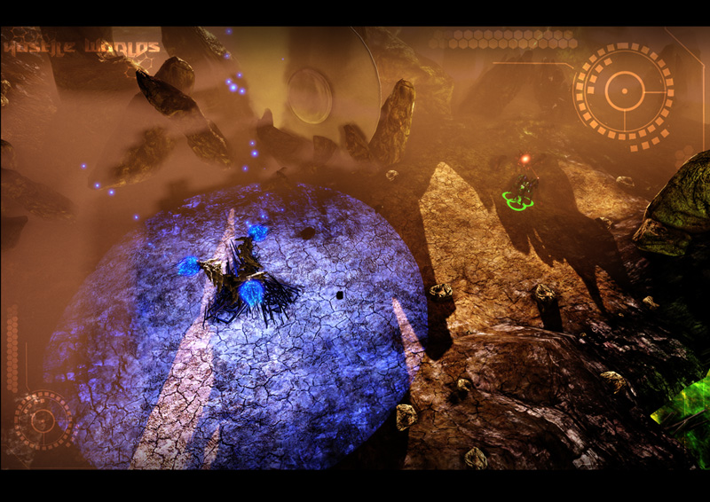
包含哪些内容？
与Platformer 游戏初学者工具包或竞速游戏初学者工具包不同；在这个初学者工具包中有很多代码和内容。它还有一些与实时策略游戏不一定相关的高级功能，但是对开发的其他方面也会有帮助。
- Platform abstraction - RTS 初学者工具包可以分辨出玩家正在使用什么平台玩游戏。根据玩家使用的平台，使用的玩家控制器和 HUD 类也会有所不同。但是，只是中断了对 PC 和 Console 平台类的支持。目前，只完全支持移动设备平台。
- Camera - RTS 初学者工具包有一个指导您如何创建一个像鸟的眼睛视图相机一样的相机的示例。它可以支持平移、触摸平移和缩放。
- Structures - RTS 初学者工具包中包含可以处理玩家构建的结构的示例代码。
- Units - RTS 初学者工具包中包含可以处理玩家可以将命令发布到的单元的示例代码。
- Skills - RTS 初学者工具包中包含可以处理单元的技能的示例代码。
- Resource Management - RTS 初学者工具包中包含可以处理玩家资源的示例代码。
- AI - RTS 初学者工具包中包含向您说明如何创建一个能够构建结构、单元并与您作战的敌人 AI 玩家的示例代码。
- Upgrades - RTS 初学者工具包中包含向您说明如何为您的单元创建升级的示例代码。
- Structure Upgrades - RTS 初学者工具包中包含向您说明如何创建可以将自己本身升级为高级形式的结构的示例代码。
- Networking - RTS 初学者工具包已经在心里通过相互关联进行构建，这样为您设置了函数复制。
- Documentation - RTS 初学者工具包使用与Javadocs相似的类型完整保存。
- UI - RTS 初学者工具包有一个可以处理简单按钮的小型自定义 UI 码基数。
代码结构
RTS 初学者工具包是一个大型的复杂项目，因此在您开始扩展和/或修改这个初学者工具包创建您的游戏之前了解所有部分是重要的。
如何发现“隐藏”在鼠标/手指后面的秘密？
鼠标界面代码与鼠标界面开发工具包精华文章相比工作方式截然不同。在这个 RTS 游戏实例中，您实际上不希望距离远的单元选择起来困难，或者您可能希望在任何给定时间优先选择不同的单元。例如，您可能希望使单元比结构更重要，结构比资源点更重要。RTS 初学者工具包解决了由于创建代表屏幕上单元的大小的屏幕空间方框而产生的问题。要解决远处的单元的屏幕框太小的问题，可以将人造间距添加到框大小（但是，在开发过程中，由于相机类型这个问题并没有真正出现）。要解决优先级问题，首先遍历单元，然后是结构，接下来是资源。因为触摸已经在屏幕空间中捕获，所以在此会对框范围内的点进行比较，找出鼠标/手指在什么上面。如果鼠标/手指没有触摸任何东西，那么可以断定它一定已经触及到世界。 在这个代码段中，代码会遍历世界中的所有资源，同时为它们计算屏幕绑定框。
在这个代码段中，代码会遍历世界中的所有资源，同时为它们计算屏幕绑定框。
// 为所有资源计算屏幕绑定框
for (i = 0; i < UDKRTSGameReplicationInfo.Resources.Length; ++i)
{
if (UDKRTSGameReplicationInfo.Resources[i] != None)
{
UDKRTSGameReplicationInfo.Resources[i].ScreenBoundingBox = CalculateScreenBoundingBox(Self, UDKRTSGameReplicationInfo.Resources[i], UDKRTSGameReplicationInfo.Resources[i].CollisionCylinder);
// 渲染调试绑定框
if (ShouldDisplayDebug('BoundingBoxes'))
{
Canvas.SetPos(UDKRTSGameReplicationInfo.Resources[i].ScreenBoundingBox.Min.X, UDKRTSGameReplicationInfo.Resources[i].ScreenBoundingBox.Min.Y);
Canvas.DrawColor = UDKRTSGameReplicationInfo.Resources[i].BoundingBoxColor;
Canvas.DrawBox(UDKRTSGameReplicationInfo.Resources[i].ScreenBoundingBox.Max.X - UDKRTSGameReplicationInfo.Resources[i].ScreenBoundingBox.Min.X, UDKRTSGameReplicationInfo.Resources[i].ScreenBoundingBox.Max.Y - UDKRTSGameReplicationInfo.Resources[i].ScreenBoundingBox.Min.Y);
}
}
}
function Box CalculateScreenBoundingBox(HUD HUD, Actor Actor, PrimitiveComponent PrimitiveComponent)
{
local Box ComponentsBoundingBox, OutBox;
local Vector BoundingBoxCoordinates[8];
local int i;
if (HUD == None || PrimitiveComponent == None || Actor == None || WorldInfo.TimeSeconds - Actor.LastRenderTime >= 0.1f)
{
OutBox.Min.X = -1.f;
OutBox.Min.Y = -1.f;
OutBox.Max.X = -1.f;
OutBox.Max.Y = -1.f;
return OutBox;
}
ComponentsBoundingBox.Min = PrimitiveComponent.Bounds.Origin - PrimitiveComponent.Bounds.BoxExtent;
ComponentsBoundingBox.Max = PrimitiveComponent.Bounds.Origin + PrimitiveComponent.Bounds.BoxExtent;
// Z1
// X1, Y1
BoundingBoxCoordinates[0].X = ComponentsBoundingBox.Min.X;
BoundingBoxCoordinates[0].Y = ComponentsBoundingBox.Min.Y;
BoundingBoxCoordinates[0].Z = ComponentsBoundingBox.Min.Z;
BoundingBoxCoordinates[0] = HUD.Canvas.Project(BoundingBoxCoordinates[0]);
// X2, Y1
BoundingBoxCoordinates[1].X = ComponentsBoundingBox.Max.X;
BoundingBoxCoordinates[1].Y = ComponentsBoundingBox.Min.Y;
BoundingBoxCoordinates[1].Z = ComponentsBoundingBox.Min.Z;
BoundingBoxCoordinates[1] = HUD.Canvas.Project(BoundingBoxCoordinates[1]);
// X1, Y2
BoundingBoxCoordinates[2].X = ComponentsBoundingBox.Min.X;
BoundingBoxCoordinates[2].Y = ComponentsBoundingBox.Max.Y;
BoundingBoxCoordinates[2].Z = ComponentsBoundingBox.Min.Z;
BoundingBoxCoordinates[2] = HUD.Canvas.Project(BoundingBoxCoordinates[2]);
// X2, Y2
BoundingBoxCoordinates[3].X = ComponentsBoundingBox.Max.X;
BoundingBoxCoordinates[3].Y = ComponentsBoundingBox.Max.Y;
BoundingBoxCoordinates[3].Z = ComponentsBoundingBox.Min.Z;
BoundingBoxCoordinates[3] = HUD.Canvas.Project(BoundingBoxCoordinates[3]);
// Z2
// X1, Y1
BoundingBoxCoordinates[4].X = ComponentsBoundingBox.Min.X;
BoundingBoxCoordinates[4].Y = ComponentsBoundingBox.Min.Y;
BoundingBoxCoordinates[4].Z = ComponentsBoundingBox.Max.Z;
BoundingBoxCoordinates[4] = HUD.Canvas.Project(BoundingBoxCoordinates[4]);
// X2, Y1
BoundingBoxCoordinates[5].X = ComponentsBoundingBox.Max.X;
BoundingBoxCoordinates[5].Y = ComponentsBoundingBox.Min.Y;
BoundingBoxCoordinates[5].Z = ComponentsBoundingBox.Max.Z;
BoundingBoxCoordinates[5] = HUD.Canvas.Project(BoundingBoxCoordinates[5]);
// X1, Y2
BoundingBoxCoordinates[6].X = ComponentsBoundingBox.Min.X;
BoundingBoxCoordinates[6].Y = ComponentsBoundingBox.Max.Y;
BoundingBoxCoordinates[6].Z = ComponentsBoundingBox.Max.Z;
BoundingBoxCoordinates[6] = HUD.Canvas.Project(BoundingBoxCoordinates[6]);
// X2, Y2
BoundingBoxCoordinates[7].X = ComponentsBoundingBox.Max.X;
BoundingBoxCoordinates[7].Y = ComponentsBoundingBox.Max.Y;
BoundingBoxCoordinates[7].Z = ComponentsBoundingBox.Max.Z;
BoundingBoxCoordinates[7] = HUD.Canvas.Project(BoundingBoxCoordinates[7]);
// 找出左方、顶部、右方和底部坐标
OutBox.Min.X = HUD.Canvas.ClipX;
OutBox.Min.Y = HUD.Canvas.ClipY;
OutBox.Max.X = 0;
OutBox.Max.Y = 0;
// 通过边界盒坐标进行迭代
for (i = 0; i < ArrayCount(BoundingBoxCoordinates); ++i)
{
// 检测最小的 X 坐标
if (OutBox.Min.X > BoundingBoxCoordinates[i].X)
{
OutBox.Min.X = BoundingBoxCoordinates[i].X;
}
// 检测最小的 Y 坐标
if (OutBox.Min.Y > BoundingBoxCoordinates[i].Y)
{
OutBox.Min.Y = BoundingBoxCoordinates[i].Y;
}
// 检测最大的 X 坐标
if (OutBox.Max.X < BoundingBoxCoordinates[i].X)
{
OutBox.Max.X = BoundingBoxCoordinates[i].X;
}
// 检测最大的 Y 坐标
if (OutBox.Max.Y < BoundingBoxCoordinates[i].Y)
{
OutBox.Max.Y = BoundingBoxCoordinates[i].Y;
}
}
// 检查边界盒是否在屏幕范围内
if ((OutBox.Min.X < 0 && OutBox.Max.X < 0) || (OutBox.Min.X > HUD.Canvas.ClipX && OutBox.Max.X > HUD.Canvas.ClipX) || (OutBox.Min.Y < 0 && OutBox.Max.Y < 0) || (OutBox.Min.Y > HUD.Canvas.ClipY && OutBox.Max.Y > HUD.Canvas.ClipY))
{
OutBox.Min.X = -1.f;
OutBox.Min.Y = -1.f;
OutBox.Max.X = -1.f;
OutBox.Max.Y = -1.f;
}
else
{
// 限定边界盒坐标
OutBox.Min.X = FClamp(OutBox.Min.X, 0.f, HUD.Canvas.ClipX);
OutBox.Max.X = FClamp(OutBox.Max.X, 0.f, HUD.Canvas.ClipX);
OutBox.Min.Y = FClamp(OutBox.Min.Y, 0.f, HUD.Canvas.ClipY);
OutBox.Max.Y = FClamp(OutBox.Max.Y, 0.f, HUD.Canvas.ClipY);
}
return OutBox;
}
// 检查我们是否触摸了任何游戏相关对象
if (PlayerReplicationInfo != None)
{
UDKRTSTeamInfo = UDKRTSTeamInfo(PlayerReplicationInfo.Team);
if (UDKRTSTeamInfo != None)
{
UDKRTSMobileHUD = UDKRTSMobileHUD(MyHUD);
if (UDKRTSMobileHUD != None)
{
// 我们触摸的是否是一个pawn？
if (TouchEvent.Response == ETR_None && UDKRTSTeamInfo.Pawns.Length > 0)
{
for (i = 0; i < UDKRTSTeamInfo.Pawns.Length; ++i)
{
if (UDKRTSTeamInfo.Pawns[i] != None && class'UDKRTSMobileHUD'.static.IsPointWithinBox(TouchLocation, UDKRTSTeamInfo.Pawns[i].ScreenBoundingBox) && TouchEvents.Find('AssociatedActor', UDKRTSTeamInfo.Pawns[i]) == INDEX_NONE)
{
UDKRTSTeamInfo.Pawns[i].Selected();
UDKRTSTeamInfo.Pawns[i].RegisterHUDActions(UDKRTSMobileHUD);
TouchEvent.AssociatedActor = UDKRTSTeamInfo.Pawns[i];
TouchEvent.Response = ETR_Pawn;
break;
}
}
}
// 我们触摸的是一个结构？
if (TouchEvent.Response == ETR_None && UDKRTSTeamInfo.Structures.Length > 0)
{
for (i = 0; i < UDKRTSTeamInfo.Structures.Length; ++i)
{
if (class'UDKRTSMobileHUD'.static.IsPointWithinBox(TouchLocation, UDKRTSTeamInfo.Structures[i].ScreenBoundingBox) && TouchEvents.Find('AssociatedActor', UDKRTSTeamInfo.Structures[i]) == INDEX_NONE)
{
UDKRTSTeamInfo.Structures[i].Selected();
UDKRTSTeamInfo.Structures[i].RegisterHUDActions(UDKRTSMobileHUD);
TouchEvent.AssociatedActor = UDKRTSTeamInfo.Structures[i];
TouchEvent.Response = ETR_Structure;
break;
}
}
}
}
}
}
选择结构/单元后按钮显示在 HUD 上的方式？
在 RTS 初学者工具包中，按钮被称为 HUD 操作。HUD 操作是在 UDKRTSHUD.uc 中定义的结构体。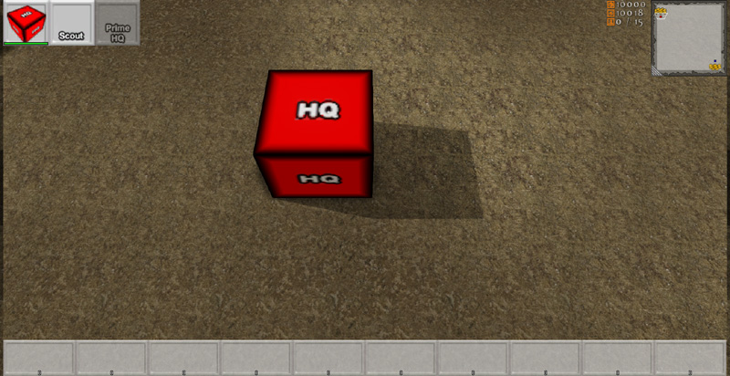
在这个代码段中，您可以看到 HUD 操作只定义了贴图和一组 UV 坐标贴图。将这些变量显示在虚幻编辑器中，这样就允许游戏开发者们设置这些值。在游戏中使用其他四个变量执行其他函数，我们将会在后续内容中进行说明。
// HUD 上的 HUD 操作
struct SHUDAction
{
var() Texture2D Texture;
var() float U;
var() float V;
var() float UL;
var() float VL;
var EHUDActionReference Reference;
var int Index;
var bool PostRender;
var delegate<IsHUDActionActive> IsHUDActionActiveDelegate;
};
// HUD 上与 actor 相关联的 HUD 操作
struct SAssociatedHUDAction
{
var Actor AssociatedActor;
var array<SHUDAction> HUDActions;
};
simulated function RegisterHUDActions(UDKRTSMobileHUD HUD)
{
local int i;
local SHUDAction SendHUDAction;
if (HUD == None || OwnerReplicationInfo == None || HUD.AssociatedHUDActions.Find('AssociatedActor', Self) != INDEX_NONE || Health <= 0)
{
return;
}
// 注册相机中心 HUD 操作
if (Portrait.Texture != None)
{
SendHUDAction = Portrait;
SendHUDAction.Reference = EHAR_Center;
SendHUDAction.Index = -1;
SendHUDAction.PostRender = true;
HUD.RegisterHUDAction(Self, SendHUDAction);
}
}
function RegisterHUDAction(Actor AssociatedActor, SHUDAction HUDAction)
{
local SAssociatedHUDAction AssociatedHUDAction;
local int IndexA, IndexB;
// 获取索引值 A
IndexA = AssociatedHUDActions.Find('AssociatedActor', AssociatedActor);
if (IndexA != INDEX_NONE)
{
// 获取索引值 B
IndexB = AssociatedHUDActions[IndexA].HUDActions.Find('Reference', HUDAction.Reference);
if (IndexB != INDEX_NONE && AssociatedHUDActions[IndexA].HUDActions[IndexB].Index == HUDAction.Index)
{
return;
}
}
if (IndexA != INDEX_NONE)
{
// 添加相关联的 HUD 操作
AssociatedHUDActions[IndexA].HUDActions.AddItem(HUDAction);
}
else
{
// 添加相关联的 HUD 操作
AssociatedHUDAction.AssociatedActor = AssociatedActor;
AssociatedHUDAction.HUDActions.AddItem(HUDAction);
AssociatedHUDActions.AddItem(AssociatedHUDAction);
}
}
event PostRender()
{
Super.PostRender();
if (AssociatedHUDActions.Length > 0)
{
Offset.X = PlayableSpaceLeft;
Offset.Y = 0;
Size.X = SizeX * 0.0625f;
Size.Y = Size.X;
for (i = 0; i < AssociatedHUDActions.Length; ++i)
{
if (AssociatedHUDActions[i].AssociatedActor != None && AssociatedHUDActions[i].HUDActions.Length > 0)
{
Offset.X = HUDProperties.ScrollWidth;
for (j = 0; j < AssociatedHUDActions[i].HUDActions.Length; ++j)
{
if (AssociatedHUDActions[i].HUDActions[j].IsHUDActionActiveDelegate != None)
{
IsHUDActionActive = AssociatedHUDActions[i].HUDActions[j].IsHUDActionActiveDelegate;
if (!IsHUDActionActive(AssociatedHUDActions[i].HUDActions[j].Reference, AssociatedHUDActions[i].HUDActions[j].Index, false))
{
Canvas.SetDrawColor(191, 191, 191, 191);
}
else
{
Canvas.SetDrawColor(255, 255, 255);
}
IsHUDActionActive = None;
}
else
{
Canvas.SetDrawColor(255, 255, 255);
}
Canvas.SetPos(Offset.X, Offset.Y);
Canvas.DrawTile(AssociatedHUDActions[i].HUDActions[j].Texture, Size.X, Size.Y, AssociatedHUDActions[i].HUDActions[j].U, AssociatedHUDActions[i].HUDActions[j].V, AssociatedHUDActions[i].HUDActions[j].UL, AssociatedHUDActions[i].HUDActions[j].VL);
if (AssociatedHUDActions[i].HUDActions[j].PostRender)
{
UDKRTSHUDActionInterface = UDKRTSHUDActionInterface(AssociatedHUDActions[i].AssociatedActor);
if (UDKRTSHUDActionInterface != None)
{
UDKRTSHUDActionInterface.PostRenderHUDAction(Self, AssociatedHUDActions[i].HUDActions[j].Reference, AssociatedHUDActions[i].HUDActions[j].Index, Offset.X, Offset.Y, Size.X, Size.Y);
}
}
Offset.X += Size.X;
}
}
Offset.Y += Size.Y;
}
}
}
simulated function PostRenderHUDAction(HUD HUD, EHUDActionReference Reference, int Index, int PosX, int PosY, int SizeX, int SizeY)
{
local float HealthPercentage;
local float HealthBarWidth, HealthBarHeight;
if (HUD == None || HUD.Canvas == None || Health <= 0)
{
return;
}
if (Reference == EHAR_Center)
{
// 获取生命值栏百分比
HealthPercentage = float(Health) / float(HealthMax);
// 渲染生命值栏边界
HealthBarWidth = SizeX - 2;
HealthBarHeight = 8;
HUD.Canvas.SetPos(PosX + 1, PosY + SizeY - HealthBarHeight - 1);
HUD.Canvas.SetDrawColor(0, 0, 0, 191);
HUD.Canvas.DrawBox(HealthBarWidth, HealthBarHeight);
HealthBarWidth -= 4;
HealthBarHeight -= 4;
// 渲染失掉的生命值
HUD.Canvas.SetPos(PosX + 3, PosY + SizeY - HealthBarHeight - 3);
HUD.Canvas.SetDrawColor(0, 0, 0, 127);
HUD.Canvas.DrawRect(HealthBarWidth, HealthBarHeight);
// 渲染生命值栏
HUD.Canvas.SetPos(PosX + 3, PosY + SizeY - HealthBarHeight - 3);
HUD.Canvas.SetDrawColor(255 * (1.f - HealthPercentage), 255 * HealthPercentage, 0, 191);
HUD.Canvas.DrawRect(HealthBarWidth * HealthPercentage, HealthBarHeight);
}
}
HUD 操作被按下后是怎样工作的呢？
当 UDKRTSMobilePlayerController 接收到触摸输入后，它首先会将它传递给 HUD，检查触摸地点是否位于任意 HUD 操作的边界范围内。如果在范围内，那么它会首选调用 HUD 操作处于激活状态的代理。该代理允许任何 actor 绑定到它，影响 HUD 操作是否会做一些操作。如果 HUD 操作被允许激活，那么它会在 UDKRTSPlayerController 中调用 StartHUDAction。进行上述处理，这样才能在从客户端到服务器的远程调用中包含这个 HUD 操作。然后将与 HUD 操作相关联的 actor 转换为 UDKRTSHUDActionInterface。如果转换成功，那么调用 HandleHUDAction 使这个 actor 进行某些操作。
function ETouchResponse InputTouch(Vector2D ScreenTouchLocation)
{
// 勾选 HUD 操作控件
if (AssociatedHUDActions.Length > 0)
{
Offset.X = PlayableSpaceLeft;
Offset.Y = 0;
Size.X = SizeX * 0.0625f;
Size.Y = Size.X;
for (i = 0; i < AssociatedHUDActions.Length; ++i)
{
if (AssociatedHUDActions[i].AssociatedActor != None && AssociatedHUDActions[i].HUDActions.Length > 0)
{
Offset.X = HUDProperties.ScrollWidth;
for (j = 0; j < AssociatedHUDActions[i].HUDActions.Length; ++j)
{
if (ScreenTouchLocation.X >= Offset.X && ScreenTouchLocation.Y >= Offset.Y && ScreenTouchLocation.X <= Offset.X + Size.X && ScreenTouchLocation.Y <= Offset.Y + Size.Y)
{
if (AssociatedHUDActions[i].HUDActions[j].IsHUDActionActiveDelegate != None)
{
IsHUDActionActive = AssociatedHUDActions[i].HUDActions[j].IsHUDActionActiveDelegate;
if (!IsHUDActionActive(AssociatedHUDActions[i].HUDActions[j].Reference, AssociatedHUDActions[i].HUDActions[j].Index, true))
{
IsHUDActionActive = None;
return ETR_HUDAction;
}
else
{
IsHUDActionActive = None;
}
}
// 开始 HUD 操作
UDKRTSMobilePlayerController.StartHUDAction(AssociatedHUDActions[i].HUDActions[j].Reference, AssociatedHUDActions[i].HUDActions[j].Index, AssociatedHUDActions[i].AssociatedActor);
return ETR_HUDAction;
}
Offset.X += Size.X;
}
Offset.Y += Size.Y;
}
}
}
}
/**
* 向 actor 发送操作命令
*
* @param Reference HUD 操作参数
* @param Index HUD 操作索引
* @param Actor 相关的 actor
*/
simulated function StartHUDAction(EHUDActionReference Reference, int Index, Actor Actor)
{
// 与服务器同步
if (Role < Role_Authority && class'UDKRTSUtility'.static.HUDActionNeedsToSyncWithServer(Reference) && UDKRTSHUDActionInterface(Actor) != None)
{
ServerHUDAction(Reference, Index, Actor);
}
BeginHUDAction(Reference, Index, Actor);
}
/**
* 同步 actor 的操作命令
*
* @param Reference HUD 操作参数
* @param Index HUD 操作索引
* @param Actor 相关的 actor
*/
reliable server function ServerHUDAction(EHUDActionReference Reference, int Index, Actor Actor)
{
BeginHUDAction(Reference, Index, Actor);
}
/**
* 开始对 actor 执行操作命令
*/
simulated function BeginHUDAction(EHUDActionReference Reference, int Index, Actor Actor)
{
local UDKRTSHUDActionInterface UDKRTSHUDActionInterface;
UDKRTSHUDActionInterface = UDKRTSHUDActionInterface(Actor);
if (UDKRTSHUDActionInterface != None)
{
UDKRTSHUDActionInterface.HandleHUDAction(Reference, Index);
}
}
如何处理资源？
默认情况下，在初学者工具包中有三种资源。这些资源全部在复制函数通知整型变量的时候在 UDKRTSPlayerReplicationInfo 中进行定义。复制函数代码段只会定义被复制到客户端的这三个变量，如果这些变量已经“改写”（客户端和服务器之间不同），那么复制函数只可以进行一个方向的操作（只有服务器可以将这个变量复制到客户端，客户端无法将这些变量复制到服务器）。
// 玩家拥有的资源数
var RepNotify int Resources;
// 玩家拥有的力量
var RepNotify int Power;
// 玩家当前人口数量上限
var RepNotify int PopulationCap;
// 复制函数代码段
replication
{
if (bNetDirty && Role == Role_Authority)
Resources, Power, PopulationCap;
}
/**
* 在复制了一个属性标签为 "RepNotify" 的变量时进行调用
*
* @param VarName 进行复制的变量的名称
*/
simulated event ReplicatedEvent(name VarName)
{
if (VarName == 'Resources')
{
// 资源变量发生了改变
}
else if (VarName == 'Power')
{
// 力量变量发生了改变
}
else if (VarName == 'PopulationCap')
{
// PopulationCap 变量发生了改变
}
else
{
Super.ReplicatedEvent(VarName);
}
}
游戏如何处理单元的创建？
对于玩家而言，通过玩家控制器进行远程调用就可以完成这项处理。这是玩家与服务器进行通信的最直接路线。 下面的示例代码会说明结构如何形成构建单元队列，这样做最后会使服务器为玩家生成一个新的单元。这段代码在 HandleHUDAction 中。这个函数会在服务器和客户端上同时执行，因为玩家控制器会同步客户端和服务器对 HandleHUDAction 的调用（请参阅 UDKRTSPlayerController.StartHUDAction()、UDKRTSPlayerController.ServerHUDAction() 和 UDKRTSPlayerController.BeginHUDAction()）。首先要检查的是申请的单元索引是否在数列边界范围内，以及玩家是否能够构建这个单元（检查玩家是否有足够的变量资源、可供使用的人口数量等等）。如果这些都满足，那么会播放一个声音通知玩家这个单元的构建已经开始。接下来整理资源进行这个单元构建。这会在客户端上作为仿真进行，从而减少延迟回应；由于服务器也会执行这个代码，所以如果正确的资源值与客户端上的资源值不一样，那么服务器会复制正确的资源值。通过这些操作，创建一个新的 HUD 操作，然后将它添加给玩家的 HUD。进行这项操作的原因是在这个阶段玩家仍然还将他/她的手指放在这个结构上，而这个结构的 HUD 操作将会仍然可见。然后将购买的单元原型添加到单元生产队列。如果单元构建计时器还没有开始计时，那么现在就开启它。
if (Index >= 0 && Index < BuildablePawnArchetypes.Length && class'UDKRTSPawn'.static.CanBuildPawn(BuildablePawnArchetypes[Index], OwnerReplicationInfo, false))
{
// 播放建筑声音
class'UDKRTSCommanderVoiceOver'.static.PlayBuildingSoundCue(OwnerReplicationInfo);
// 整理资源
OwnerReplicationInfo.Resources -= BuildablePawnArchetypes[Index].ResourcesCost;
OwnerReplicationInfo.Power -= BuildablePawnArchetypes[Index].PowerCost;
// 更新玩家控制器的 HUD 操作
PlayerController = PlayerController(OwnerReplicationInfo.Owner);
if (PlayerController != None)
{
UDKRTSMobileHUD = UDKRTSMobileHUD(PlayerController.MyHUD);
if (UDKRTSMobileHUD != None)
{
SendHUDAction = BuildablePawnArchetypes[Index].BuildHUDAction;
SendHUDAction.Reference = EHAR_Building;
SendHUDAction.Index = QueuedUnitArchetypes.Length;
SendHUDAction.PostRender = true;
UDKRTSMobileHUD.RegisterHUDAction(Self, SendHUDAction);
}
}
// 将这个单元添加到队列
QueuedUnitArchetypes.AddItem(BuildablePawnArchetypes[Index]);
// 如果没有激活构建单元计时器，那么开启它
if (!IsTimerActive(NameOf(BuildingUnit)))
{
SetTimer(BuildablePawnArchetypes[Index].BuildTime, false, NameOf(BuildingUnit));
}
}
simulated function BuildingUnit()
{
local Vector SpawnLocation;
local Rotator R;
local UDKRTSMobileHUD UDKRTSMobileHUD;
local PlayerController PlayerController;
local int i;
local SHUDAction SendHUDAction;
// 检查这个结构是否可以构建单元
if (!IsConstructed || QueuedUnitArchetypes.Length <= 0)
{
return;
}
// 更新 HUD 操作列表
PlayerController = PlayerController(OwnerReplicationInfo.Owner);
if (PlayerController != None)
{
UDKRTSMobileHUD = UDKRTSMobileHUD(PlayerController.MyHUD);
if (UDKRTSMobileHUD != None && UDKRTSMobileHUD.AssociatedHUDActions.Find('AssociatedActor', Self) != INDEX_NONE)
{
UDKRTSMobileHUD.UnregisterHUDActionByReference(Self, EHAR_Building);
if (QueuedUnitArchetypes.Length > 0)
{
for (i = 0; i < QueuedUnitArchetypes.Length; ++i)
{
if (QueuedUnitArchetypes[i] != None)
{
SendHUDAction = QueuedUnitArchetypes[i].BuildHUDAction;
SendHUDAction.Reference = EHAR_Building;
SendHUDAction.Index = i;
SendHUDAction.PostRender = true;
UDKRTSMobileHUD.RegisterHUDAction(Self, SendHUDAction);
}
}
}
}
}
// 获取合适的生成位置
if (Role == Role_Authority)
{
if (RallyPointLocation == Location)
{
R.Yaw = Rand(65536);
SpawnLocation = Location + Vector(R) * (QueuedUnitArchetypes[0].CylinderComponent.CollisionRadius + UnitSpawnRadius);
}
else
{
SpawnLocation = Location + Normal(RallyPointLocation - Location) * (QueuedUnitArchetypes[0].CylinderComponent.CollisionRadius + UnitSpawnRadius);
}
SpawnLocation.Z -= CollisionCylinder.CollisionHeight;
// 请求这个 pawn
RequestPawn(QueuedUnitArchetypes[0], SpawnLocation);
}
// 从队列中删除这个单元
QueuedUnitArchetypes.Remove(0, 1);
// 如果队列中仍然留下了单元，那么再次启动构建单元计时器
if (QueuedUnitArchetypes.Length > 0)
{
SetTimer(QueuedUnitArchetypes[0].BuildTime, false, NameOf(BuildingUnit));
}
}
function RequestPawn(UDKRTSPawn RequestedPawnArchetype, UDKRTSPlayerReplicationInfo RequestingReplicationInfo, Vector SpawnLocation, bool InRallyPointValid, Vector RallyPoint, Actor RallyPointActorReference)
{
local UDKRTSPawn UDKRTSPawn;
local UDKRTSAIController UDKRTSAIController;
local UDKRTSResource UDKRTSResource;
if (RequestedPawnArchetype == None || RequestingReplicationInfo == None)
{
return;
}
UDKRTSPawn = Spawn(RequestedPawnArchetype.Class,,, SpawnLocation + Vect(0.f, 0.f, 1.f) * RequestedPawnArchetype.CylinderComponent.CollisionHeight,, RequestedPawnArchetype);
if (UDKRTSPawn != None)
{
if (UDKRTSPawn.bDeleteMe)
{
`Warn(Self$":: RequestPawn:: Deleted newly spawned pawn, refund player his money?");
}
else
{
UDKRTSPawn.SetOwnerReplicationInfo(RequestingReplicationInfo);
UDKRTSPawn.SpawnDefaultController();
UDKRTSAIController = UDKRTSAIController(UDKRTSPawn.Controller);
if (UDKRTSAIController != None)
{
if (RallyPointActorReference != None)
{
UDKRTSResource = UDKRTSResource(RallyPointActorReference);
if (UDKRTSResource != None && UDKRTSPawn.HarvestResourceInterval > 0)
{
UDKRTSAIController.HarvestResource(UDKRTSResource);
}
}
else if (InRallyPointValid)
{
UDKRTSAIController.MoveToPoint(RallyPoint);
}
}
}
}
}
simulated function SetOwnerReplicationInfo(UDKRTSPlayerReplicationInfo NewOwnerReplicationInfo)
{
local UDKRTSTeamInfo UDKRTSTeamInfo;
if (NewOwnerReplicationInfo == None)
{
return;
}
// 单元可以转换到其他团队
if (OwnerReplicationInfo != None && OwnerReplicationInfo != NewOwnerReplicationInfo)
{
UDKRTSTeamInfo = UDKRTSTeamInfo(OwnerReplicationInfo.Team);
if (UDKRTSTeamInfo != None)
{
UDKRTSTeamInfo.RemovePawn(Self);
}
}
// 分配团队
OwnerReplicationInfo = NewOwnerReplicationInfo;
if (!UpdateTeamMaterials())
{
SetTimer(0.1f, true, NameOf(CheckTeamInfoForOwnerReplicationInfo));
}
// 为这个 pawn 赋予默认武器，前提是它目前没有默认值
if (Role == Role_Authority && WeaponArchetype != None && UDKRTSWeapon == None)
{
UDKRTSWeapon = Spawn(WeaponArchetype.Class, Self,, Location, Rotation, WeaponArchetype);
if (UDKRTSWeapon != None)
{
UDKRTSWeapon.SetOwner(Self);
UDKRTSWeapon.UDKRTSWeaponOwnerInterface = UDKRTSWeaponOwnerInterface(Self);
UDKRTSWeapon.Initialize();
UDKRTSWeapon.AttachToSkeletalMeshComponent(Mesh, LightEnvironment, WeaponSocketName);
}
}
// 向客户端发送一个世界消息，消息内容是这个 pawn 受过训练
OwnerReplicationInfo.ReceiveWorldMessage(FriendlyName@"trained.", class'HUD'.default.WhiteColor, Location, Portrait.Texture, Portrait.U, Portrait.V, Portrait.UL, Portrait.VL);
class'UDKRTSCommanderVoiceOver'.static.PlayUnitReadySoundCue(OwnerReplicationInfo);
}
游戏如何处理结构的创建？
在这篇初学者工具包中，只有 pawn 可以创建结构。通常，当玩家想要 pawn 进行一些操作时，会显示一个“命令”网格物体。它显示为一个活动的白色空心圆圈。因此，当玩家按下其中一个结构图标时，它只会将这个命令网格物体转换为玩家想要构建的结构的半透明版本。
simulated function HandleHUDAction(EHUDActionReference Reference, int Index)
{
// 代码段
// 构建命令
case EHAR_Build:
if (Index >= 0 && Index < BuildableStructureArchetypes.Length)
{
CommandMesh.SetSkeletalMesh(BuildableStructureArchetypes[Index].PreviewSkeletalMesh);
CommandMode = ECM_BuildStructure;
}
break;
// 代码段
}
simulated function SetCommandMeshTranslation(Vector NewTranslation, bool NewHide)
{
// 代码段
case ECM_BuildStructure:
// 检查所有构建是否在半径范围内，如果是这样的话，将其转换为红色，这表示我们不可以在这里进行构建
if (CommandIndex >= 0 && CommandIndex < BuildableStructureArchetypes.Length)
{
CanBuildStructure = true;
ForEach VisibleCollidingActors(class'Actor', Actor, BuildableStructureArchetypes[CommandIndex].PlacementClearanceRadius, NewTranslation, true,, true)
{
CanBuildStructure = false;
break;
}
Material = (CanBuildStructure) ? BuildableStructureArchetypes[CommandIndex].CanBuildMaterial : BuildableStructureArchetypes[CommandIndex].CantBuildMaterial;
}
break;
// 代码段
}
event PostRender()
{
// 代码段
case ECM_BuildStructure:
if (PlayerUDKRTSTeamInfo.Pawns[i] != None)
{
PlayerUDKRTSTeamInfo.Pawns[i].HasPendingCommand = false;
// 回放这个 pawn 确认特效和声效
PlayerUDKRTSTeamInfo.Pawns[i].ConfirmCommand();
// 反映射待处理屏幕命令位置
Canvas.Deproject(PlayerUDKRTSTeamInfo.Pawns[i].PendingScreenCommandLocation, CurrentWorldLocation, CurrentWorldDirection);
// 找到待定移动位置的世界位置
ForEach TraceActors(class'UDKRTSCameraBlockingVolume', UDKRTSCameraBlockingVolume, HitCurrentWorldLocation, HitNormal, CurrentWorldLocation + CurrentWorldDirection * 65536.f, CurrentWorldLocation)
{
// 请求这个结构
UDKRTSMobilePlayerController.RequestStructure(PlayerUDKRTSTeamInfo.Pawns[i].BuildableStructureArchetypes[PlayerUDKRTSTeamInfo.Pawns[i].CommandIndex], HitCurrentWorldLocation);
// 将这个 pawn 移动到这里
UDKRTSMobilePlayerController.GiveMoveOrder(HitCurrentWorldLocation + Normal(PlayerUDKRTSTeamInfo.Pawns[i].Location - HitCurrentWorldLocation) * PlayerUDKRTSTeamInfo.Pawns[i].BuildableStructureArchetypes[PlayerUDKRTSTeamInfo.Pawns[i].CommandIndex].CollisionCylinder.CollisionRadius * 1.5f, PlayerUDKRTSTeamInfo.Pawns[i]);
break;
}
}
break;
// 代码段
}
function UDKRTSStructure RequestStructure(UDKRTSStructure RequstedStructureArchetype, UDKRTSPlayerReplicationInfo RequestingReplicationInfo, Vector SpawnLocation)
{
local UDKRTSStructure UDKRTSStructure;
local Actor Actor;
local UDKRTSMobilePlayerController UDKRTSMobilePlayerController;
// 检查对象变量
if (RequstedStructureArchetype == None || RequestingReplicationInfo == None)
{
return None;
}
// 检查附近是否有 actor 妨碍构建
ForEach VisibleCollidingActors(class'Actor', Actor, RequstedStructureArchetype.PlacementClearanceRadius, SpawnLocation, true,, true)
{
class'UDKRTSCommanderVoiceOver'.static.PlayCannotDeployHereSoundCue(RequestingReplicationInfo);
UDKRTSMobilePlayerController = UDKRTSMobilePlayerController(RequestingReplicationInfo.Owner);
if (UDKRTSMobilePlayerController != None)
{
UDKRTSMobilePlayerController.ReceiveMessage("Cannot deploy here.");
}
return None;
}
// 检查玩家是否可以构建这个结构
if (!class'UDKRTSStructure'.static.CanBuildStructure(RequstedStructureArchetype, RequestingReplicationInfo, true))
{
return None;
}
// 生成这个结构
UDKRTSStructure = Spawn(RequstedStructureArchetype.Class,,, SpawnLocation + Vect(0.f, 0.f, 1.f) * RequstedStructureArchetype.CollisionCylinder.CollisionHeight,, RequstedStructureArchetype, true);
if (UDKRTSStructure != None)
{
RequestingReplicationInfo.Resources -= RequstedStructureArchetype.ResourcesCost;
RequestingReplicationInfo.Power -= RequstedStructureArchetype.PowerCost;
UDKRTSStructure.SetOwnerReplicationInfo(RequestingReplicationInfo);
}
return UDKRTSStructure;
}
simulated function Tick(float DeltaTime)
{
// 代码段
// 检查建筑物是否要等待 pawn 开始构建
else if (WaitingForPawnToStartConstruction)
{
// 扫描附近的 pawn
ForEach VisibleCollidingActors(class'UDKRTSPawn', UDKRTSPawn, CollisionCylinder.CollisionRadius * 1.5f, Location, true,, true)
{
// 检查这个 pawn 是否在我们的团队
if (UDKRTSPawn != None && OwnerReplicationInfo != None && UDKRTSPawn.OwnerReplicationInfo != None && UDKRTSPawn.OwnerReplicationInfo.Team == OwnerReplicationInfo.Team)
{
// 开始构建这个结构
CreateNavMeshObstacle();
SetHidden(false);
WaitingForPawnToStartConstruction = false;
SetDrawScale3D(Vect(1.f, 1.f, 0.01f));
SetTimer(ConstructionTime, false, NameOf(CompleteConstruction));
break;
}
}
}
// 代码段
}
AI 的工作原理？
AI 是一个具有循环计时器设置的 AIController。它同时还包含 pawn 和结构可以调用的通知函数，使 AI 在发生其他事情的时候执行一些操作。例如，如果一个结构被损坏了，这个结构将会通知 AI 它被损坏了，它允许 AI 尽量对这种情况“做出回应”。
event TakeDamage(int DamageAmount, Controller EventInstigator, vector HitLocation, vector Momentum, class<DamageType> DamageType, optional TraceHitInfo HitInfo, optional Actor DamageCauser)
{
// 代码段
// 如果这个所有者是一个 AI，那么通知 AI 它的基类遭到攻击
UDKRTSTeamAIController = UDKRTSTeamAIController(OwnerReplicationInfo.Owner);
if (UDKRTSTeamAIController != None)
{
UDKRTSTeamAIController.NotifyStructureDamage(EventInstigator, Self);
}
// 代码段
}
function NotifyStructureDamage(Controller EventInstigator, UDKRTSStructure Structure)
{
local int i;
local float Distance;
local UDKRTSAIController UDKRTSAIController;
local UDKRTSTargetInterface PotentialTarget;
// 检查参数
if (CachedUDKRTSTeamInfo == None || EventInstigator == None || EventInstigator.Pawn == None)
{
return;
}
if (CachedUDKRTSTeamInfo.Pawns.Length > 0)
{
// 找到潜在的目标
PotentialTarget = UDKRTSTargetInterface(EventInstigator.Pawn);
if (PotentialTarget != None)
{
for (i = 0; i < CachedUDKRTSTeamInfo.Pawns.Length; ++i)
{
// 所有在我的控制下 1024 uu 远近范围内的健康 pawn，与攻击者交锋吧！
if (CachedUDKRTSTeamInfo.Pawns[i] != None && CachedUDKRTSTeamInfo.Pawns[i].Health > 0)
{
Distance = VSize(CachedUDKRTSTeamInfo.Pawns[i].Location - Structure.Location);
if (Distance <= 1024.f)
{
UDKRTSAIController = UDKRTSAIController(CachedUDKRTSTeamInfo.Pawns[i].Controller);
if (UDKRTSAIController != None && UDKRTSAIController.EnemyTargetInterface == None)
{
UDKRTSAIController.EngageTarget(EventInstigator.Pawn);
}
}
}
}
}
}
}
如何升级系统？
升级系统通过简单地拥有一个在服务器和客户端上存在的复制 actor 进行工作。基础的升级类 UDKRTSUpgrade 只会存储升级所提供的改进，而不会存储其他特别的内容。在计算诸如武器开火、pawn 或结构所受到的伤害或者运动速度时，服务器会检查现有的升级 actor 并应用它们的效果。例如，看看在玩家对盔甲升级进行研究并且其中一个他或她的 pawn 遭受重重一击的情况下会发生些什么。
function AdjustDamage(out int InDamage, out vector Momentum, Controller InstigatedBy, vector HitLocation, class<DamageType> DamageType, TraceHitInfo HitInfo, Actor DamageCauser)
{
local UDKRTSTeamInfo UDKRTSTeamInfo;
local int i;
Super.AdjustDamage(InDamage, Momentum, InstigatedBy, HitLocation, DamageType, HitInfo, DamageCauser);
// 检查单元是否有任何防御奖励
if (DefensiveBonus > 0.f)
{
InDamage = FClamp(1.f - DefensiveBonus, 0.f, 1.f) * InDamage;
}
// 检查所拥有的团队是否有单元盔甲奖励
if (OwnerReplicationInfo != None)
{
UDKRTSTeamInfo = UDKRTSTeamInfo(OwnerReplicationInfo.Team);
if (UDKRTSTeamInfo != None)
{
for (i = 0; i < UDKRTSTeamInfo.Upgrades.Length; ++i)
{
if (UDKRTSTeamInfo.Upgrades[i] != None && UDKRTSTeamInfo.Upgrades[i].UnitArmourBoost > 0.f)
{
InDamage = InDamage * (1.f - UDKRTSTeamInfo.Upgrades[i].UnitArmourBoost);
}
}
}
}
}
武器系统的工作原理？
武器是其中包含开火模式的简化 actor。在这里将 Weapon 作为一个基类使用，因为 Weapon 内的很多功能根本是不需要的。 武器本身不会控制它们的开火情况，但是它们会担当通路控制它什么时候应该开火以及它是否可以开火。WeaponFireMode 对象在虚幻编辑器中创建，它本身可以控制武器开火的方式。它允许设计师通过修改 WeaponFireMode 中的现有原型和参数自定义新武器，而且它还具有灵活性，通过允许程序人员简单地继承 WeaponFireMode 类为程序人员扩展系统。在这个初学者工具包中，出现了两个 WeaponFireMode，UDKRTSInstantHitWeaponFire 使用一个轨迹在 actor 上施加伤害，而 UDKRTSProjectileWeaponFire 会生成一个射弹，然后这个射弹会在碰撞的时候在 actor 上施加伤害。系统上的指挥者声音的工作原理？
系统上的指挥者声音是一个名为 UDKRTSCommanderVoiceOver 的静态对象。它会链接到一个存储在内容软件包中的原型，这样游戏策划就可以动态地变更原型，然后在运行时应用这些变更。当这个初学者工具包想要回放指挥者声音时，它会调用其中一个 Play*SoundSlot*SoundCue 函数。它反过来会调用 UDKRTSCommanderVoiceOver 中的 PlaySoundCue。PlaySoundCue 函数会检查是否应该回放这个声音，最后调用了拥有 PlayerReplicationInfo 的控制器上的 PlaySound。这个布尔变量可以确保这个声音不会被复制到其他客户端上。
/**
* 播放构建声音
*
* @param PlayerReplicationInfo 要为谁播放声音
*/
final static function PlayBuildingSoundCue(PlayerReplicationInfo PlayerReplicationInfo)
{
PlaySoundCue(PlayerReplicationInfo, default.CommanderVoiceOverArchetype.Building);
}
/**
* 播放声效
*
* @param PlayerReplicationInfo 要为谁播放声音
* @param SoundCue 要播放的声效
*/
final static function PlaySoundCue(PlayerReplicationInfo PlayerReplicationInfo, SoundCue SoundCue)
{
local AIController AIController;
local WorldInfo WorldInfo;
// 检查我们是否在专用服务器上
WorldInfo = class'WorldInfo'.static.GetWorldInfo();
if (WorldInfo != None && WorldInfo.NetMode == NM_DedicatedServer)
{
return;
}
// 检查对象引用
if (PlayerReplicationInfo == None || SoundCue == None || PlayerReplicationInfo.Owner == None)
{
return;
}
// 如果玩家复制信息属于一个 AI 控制器，那么中断
AIController = AIController(PlayerReplicationInfo.Owner);
if (AIController != None)
{
return;
}
PlayerReplicationInfo.Owner.PlaySound(SoundCue, true, true, true,, true);
}
// 播放建筑声音 class'UDKRTSCommanderVoiceOver'.static.PlayBuildingSoundCue(OwnerReplicationInfo);
如何播放音乐？
由于这个初学者工具包主要针对的是像 iPad2 这样的 iOS 设备，所以音乐使用MP3进行播放。在这个初学者工具包示例地图中使用 PlayMusicTrack Kismet 节点开始播放音乐。音乐仍然可以通过 PC 平台收听，因为音乐同时被存储为声效。如何使用这个初学者工具包创建游戏？
由于这个初学者工具包已经随附一个内置的游戏，所以您可以直接开始创建结构、单元和武器。要创建新游戏逻辑规则将需要对这个初学者工具包进行一些修改。结构、单元和武器大多数是驱动的数据，因此使用原型定义它们的很多属性。
如何创建新结构
从访问内容浏览器中的 Actor 类选项卡开始。在 actor 类树形结构中搜索 UDKRTSStructure。右击并点击 Create New Archetype（创建新原型）。 在内容浏览器中查找您的新结构原型，然后双击它打开它的属性。
在内容浏览器中查找您的新结构原型，然后双击它打开它的属性。
 从这里，研究对游戏设计师开放的变量。已经对大多数变量进行备注，所以如果您不确定它们是做什么用的，就悬浮在它们的名字上面。例如，看一看 UDKRTSGameContent.Archetypes 软件包中的其他结构原型。
从这里，研究对游戏设计师开放的变量。已经对大多数变量进行备注，所以如果您不确定它们是做什么用的，就悬浮在它们的名字上面。例如，看一看 UDKRTSGameContent.Archetypes 软件包中的其他结构原型。
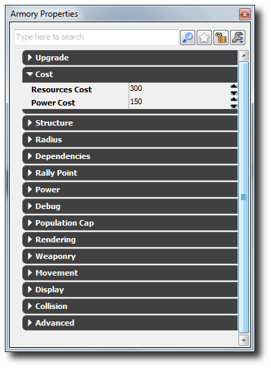
在您完成各种结构属性试验后，您需要在地图中实例化这个结构，将这个结构原型添加到单元原型中的可构建结构数列中（这样这个单元可以进行构建）和/或将其添加到 AI 的构建顺序中。 要在您的地图内部实例化它，只需在内容浏览器中选择结构原型，在世界视窗中右击然后点击 Add Archetype（添加原型）： <您的原型名称> 。记住修改实例结构中的 Starting Team Index（起始团队索引）变量设置地图启动时谁拥有这个结构。 要将其添加到您的单元原型中的可构建结构数列内，那么在内容浏览器内部查找您的单元原型。双击它调出原型属性窗口。展开 Ability（功能）类别，然后按下 Green Plus（绿色加）符号将新的数据元素添加到 Buildable Structure Archetype（可构建结构原型）数列中。在内容浏览器中选择您的结构原型，然后点击 Buildable Structure Archetypes（可构建结构原型）数列内部的 Green Arrow（绿色箭头）符号为其赋值。现在选择您的新结构后，它会显示在单元的 HUD 操作。
要将其添加到您的单元原型中的可构建结构数列内，那么在内容浏览器内部查找您的单元原型。双击它调出原型属性窗口。展开 Ability（功能）类别，然后按下 Green Plus（绿色加）符号将新的数据元素添加到 Buildable Structure Archetype（可构建结构原型）数列中。在内容浏览器中选择您的结构原型，然后点击 Buildable Structure Archetypes（可构建结构原型）数列内部的 Green Arrow（绿色箭头）符号为其赋值。现在选择您的新结构后，它会显示在单元的 HUD 操作。
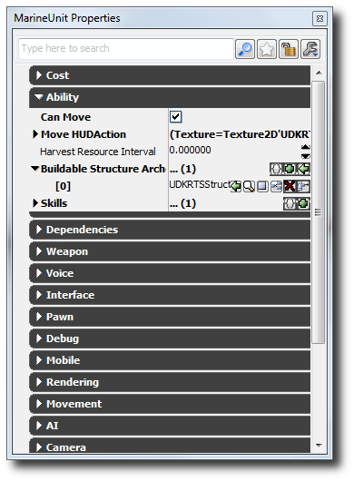
如果您想要 AI 能够构建您的新结构，那么您需要将它添加到存储在 UDKRTSGameContent.Archetype 软件包内部发现的 AIProperties 原型中的结构构建顺序数列。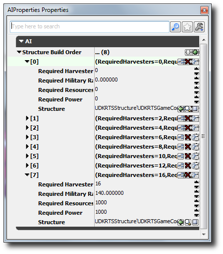
如何创建新单元 (Pawn)
从访问内容浏览器中的 Actor 类选项卡开始。在 actor 类树形结构中搜索 UDKRTSPawn。右击并点击 Create New Archetype（创建新原型）。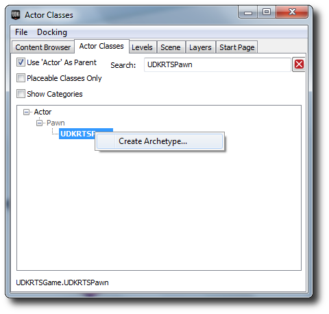
在内容浏览器中查找您的新 pawn 原型，然后双击它打开它的属性。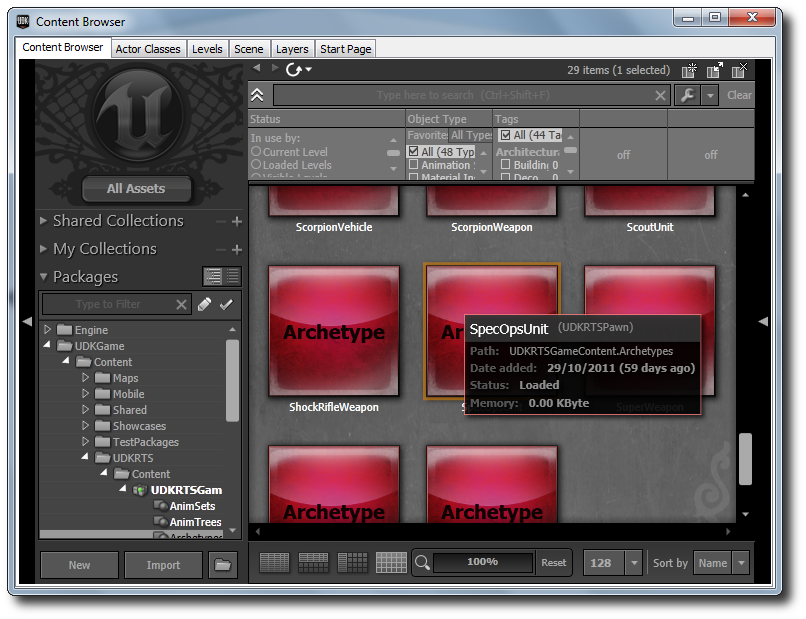
从这里，研究对游戏设计师开放的变量。已经对大多数变量进行备注，所以如果您不确定它们是做什么用的，就悬浮在它们的名字上面。例如，看一看 UDKRTSGameContent.Archetypes 软件包中的其他 pawn 原型。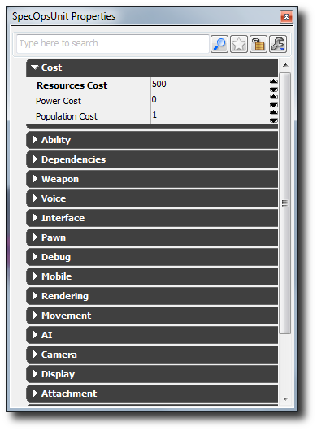
要向您的单元添加一个武器，那么查找现有武器原型或创建一个新的武器原型。在内容浏览器中选择它。在 Weapon Archetype（武器原型）字段中设置它。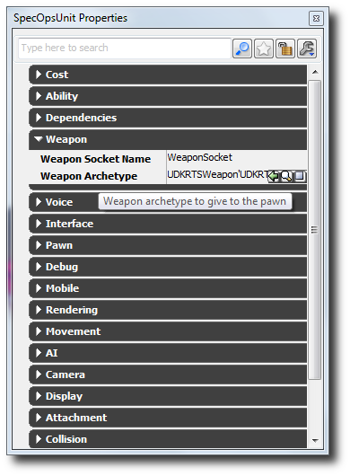
没有关于应该构建什么单元 AI 的提示，但是 AI 搜索所有它当前构建的结构以查找一个符合它当前需求的单元类型。设置各个属性，使构建结构的可能性更大，例如，这个单元是否可以从资源点收割或者是否有一个高的军队排行。将您的单元原型添加到一个结构的可构建 pawn 数列中，这是个不错的主意；否则玩家或 AI 将没有构建这个单元的权限！ 要进行这项操作，查找一个对应的结构原型。展开 Structure（结构）类别，然后按下 Green Plus（绿色加）符号将新的数据元素添加到 Buildable Pawn Archetype（可构建 Pawn 原型）数列中。在内容浏览器中选择您的 pawn 原型，然后点击 Buildable Pawn Archetypes（可构建 Pawn 原型）数列内部的 Green Arrow（绿色箭头）符号为其赋值。现在选择您的新单元后，它会显示在这个结构的 HUD 操作中。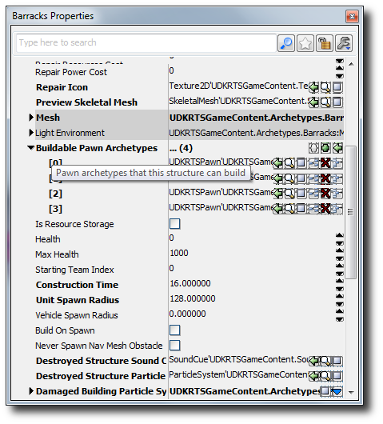
如何创建新武器
从访问内容浏览器中的 Actor 类选项卡开始。在 actor 类树形结构中搜索 UDKRTSWeapon。右击并点击 Create New Archetype（创建新原型）。 在内容浏览器中查找您的新武器原型，然后双击它打开它的属性。
在内容浏览器中查找您的新武器原型，然后双击它打开它的属性。
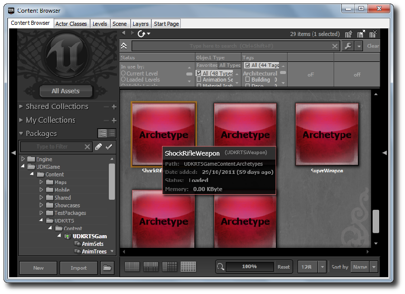
通过展开 Weapon（武器）类别创建一个新的开火模式，然后按下 Blue Arrow（蓝色箭头）打开关联菜单。如果您希望有一个根据击打扫描的武器，那么创建一个 UDKRTSInstantHitWeaponFire，或者如果您希望有一个基于射弹的武器，那么创建一个 UDKRTSProjectileWeaponFire（您将需要创建一个 UDKRTSProjectile 原型或找到一个要使用这个开火模式的 UDKRTSProjectile）。 从这里，研究对游戏设计师开放的变量。已经对大多数变量进行备注，所以如果您不确定它们是做什么用的，就悬浮在它们的名字上面。例如，看一看 UDKRTSGameContent.Archetypes 软件包中的其他 pawn 原型。
如果已经将武器设置为一个单元，那么这个单元将会自动生成，其中附带武器，随时可以使用。
从这里，研究对游戏设计师开放的变量。已经对大多数变量进行备注，所以如果您不确定它们是做什么用的，就悬浮在它们的名字上面。例如，看一看 UDKRTSGameContent.Archetypes 软件包中的其他 pawn 原型。
如果已经将武器设置为一个单元，那么这个单元将会自动生成，其中附带武器，随时可以使用。
如何使用这个初学者工具包
- 下载 UDK。
- 安装 UDK。
- 下载这个 zip 文件。
- 将内容解压缩到您的 UDK 基础目录中。（ 例如 C:\Projects\UDK-2011-11\）Windows 通知您可能会覆盖现有文件或文件夹。一直点击 Ok。

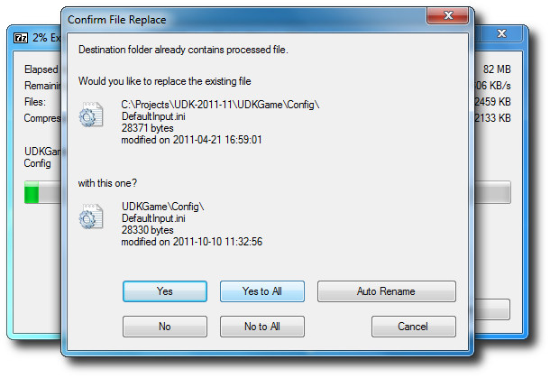
- 使用 Notepad 打开 UDKGame\Config 目录里面的 DefaultEngine.ini 。（ 例如 C:\Projects\UDK-2011-10\UDKGame\Config\DefaultEngine.ini）
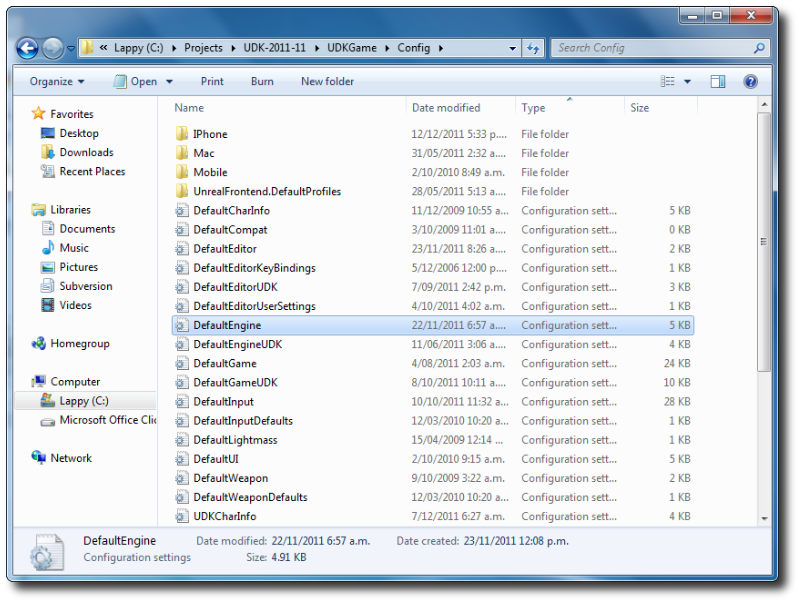
- 搜索 EditPackages 。

- 添加 +EditPackages=UDKRTSGame
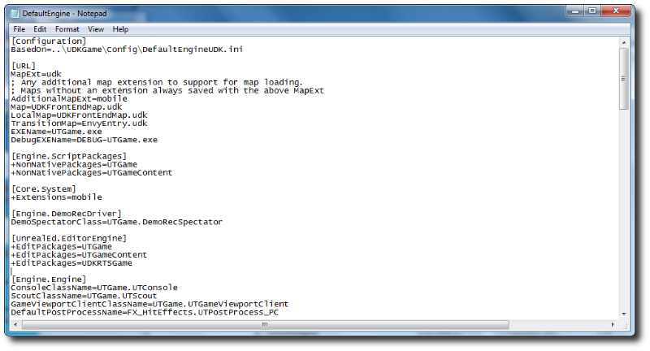
- 启动 Binaries 目录中的 Unreal Frontend Application 。（ 例如 C:\Projects\UDK-2011-11\Binaries\UnrealFrontend.exe）
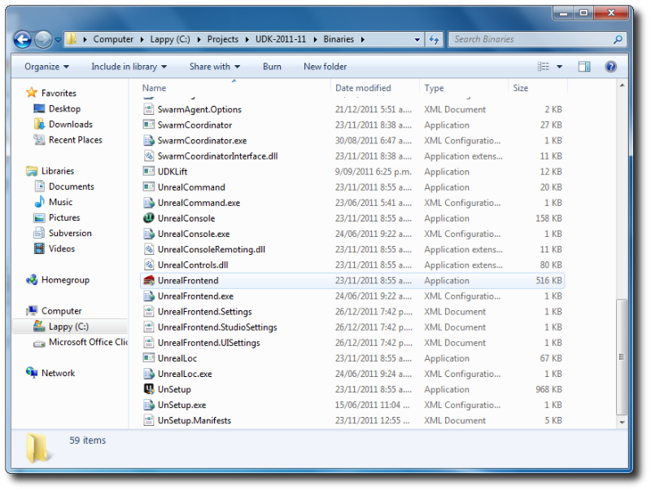
- 点击 Script（脚本） ，然后 Full Recompile（完全重新编译） 。

- 您应该可以看到 UDKRTSGame 包是最后一个进行编译的。

- 点击 UnrealEd（虚幻编辑器） 打开虚幻编辑器。
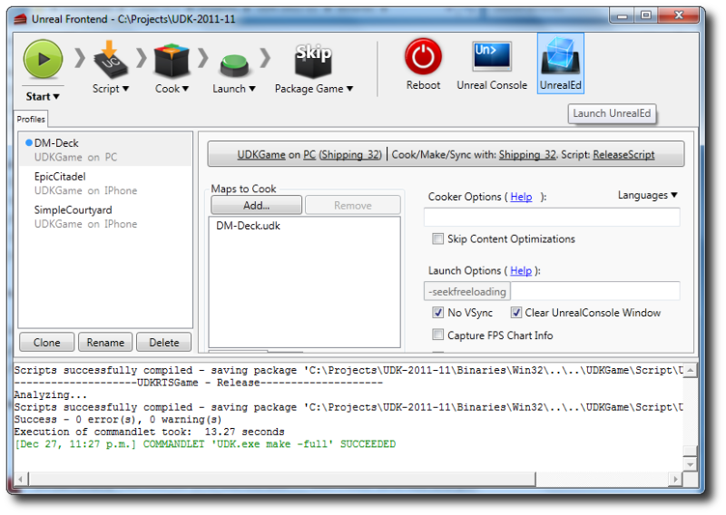
- 点击 Open（打开） 按钮，打开 RTSExampleMap.udk 。

- 确保您处于自上而下相机模式中，然后点击 Play In Editor（在编辑器中播放） 按钮播放 RTS 初学者工具包。（记住启用移动设备仿真，使用 0 到 9 按键执行 HUD 操作）
- 您还可以导出到您的 iDevice，同时在这个平台上播放 RTS 初学者工具包。（记住您需要设置您的development provision（开发条款））。